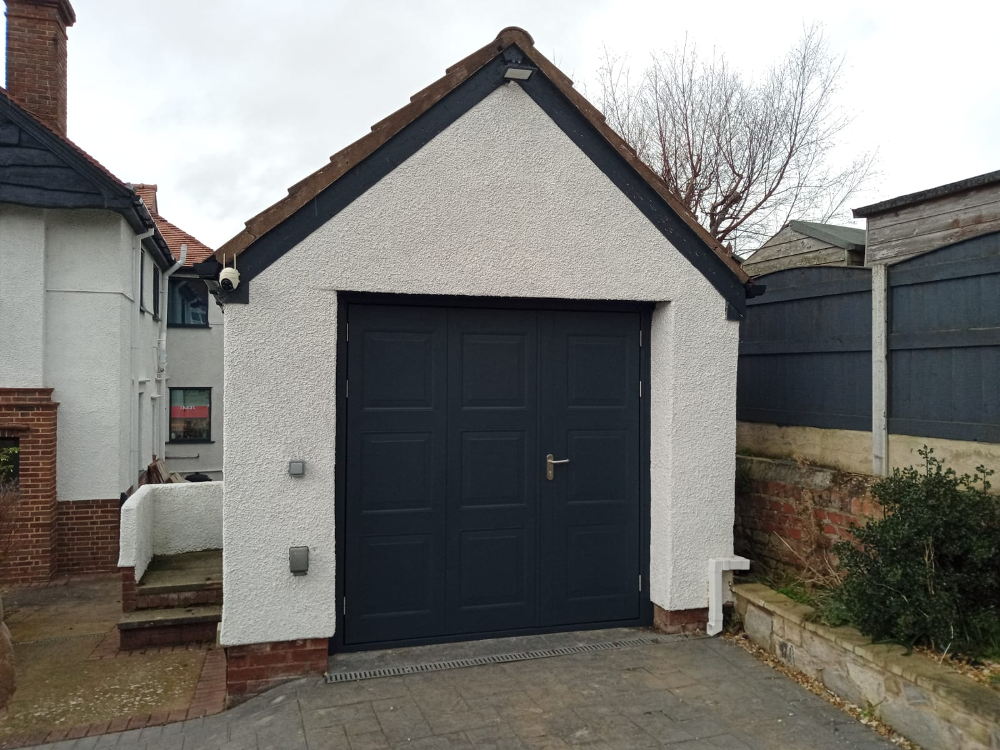
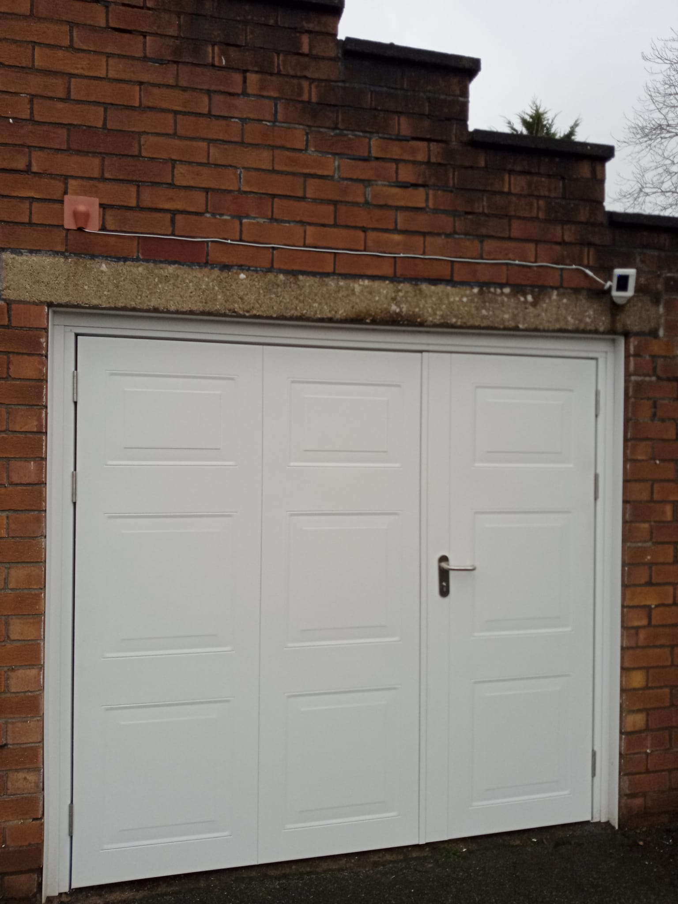
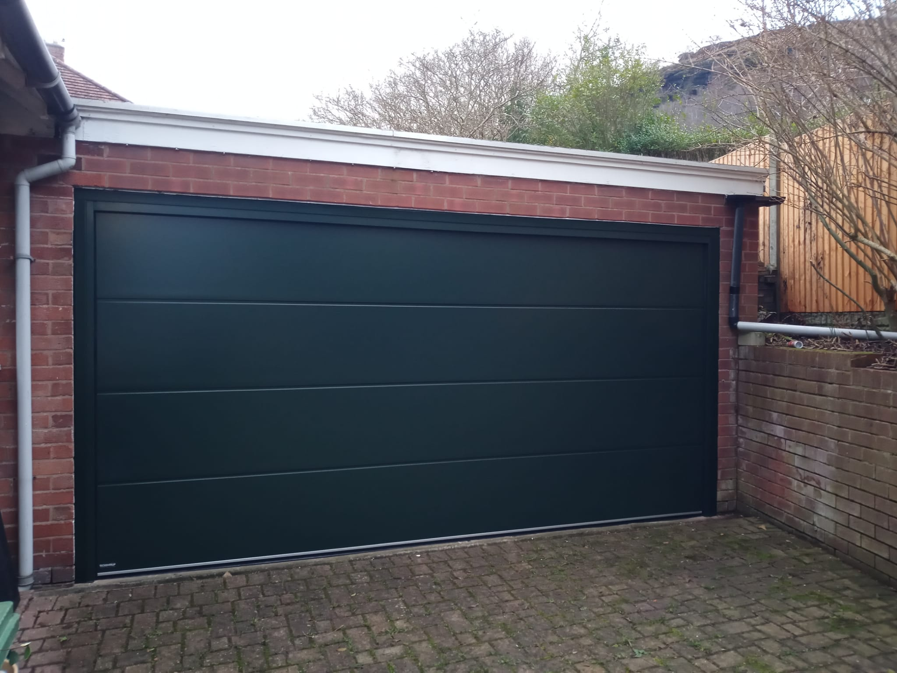
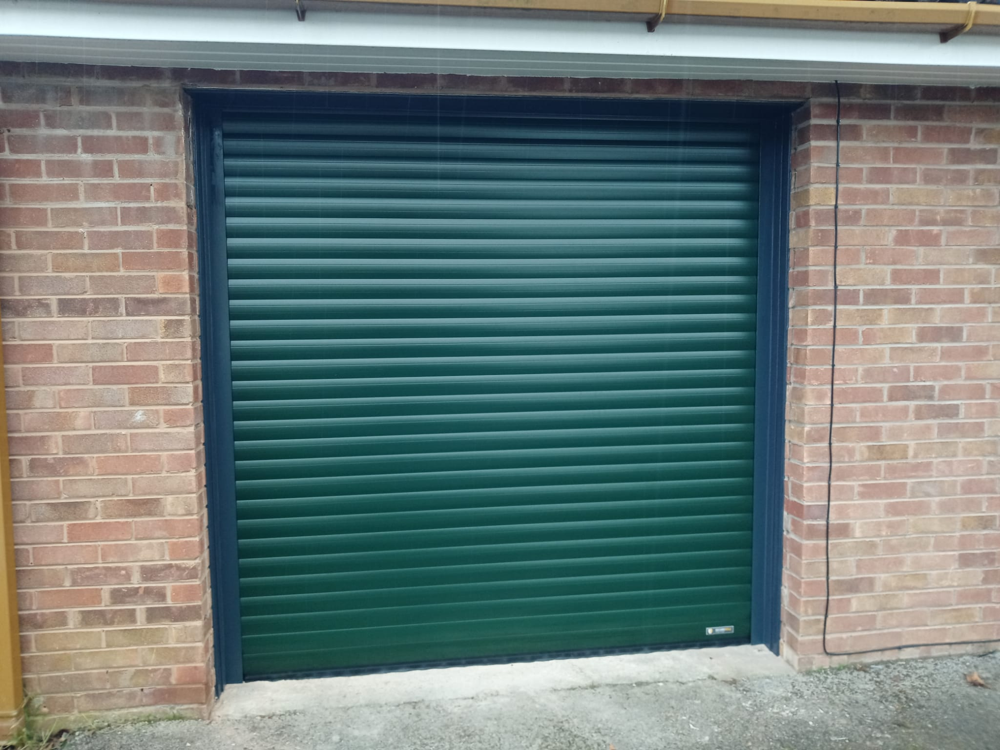
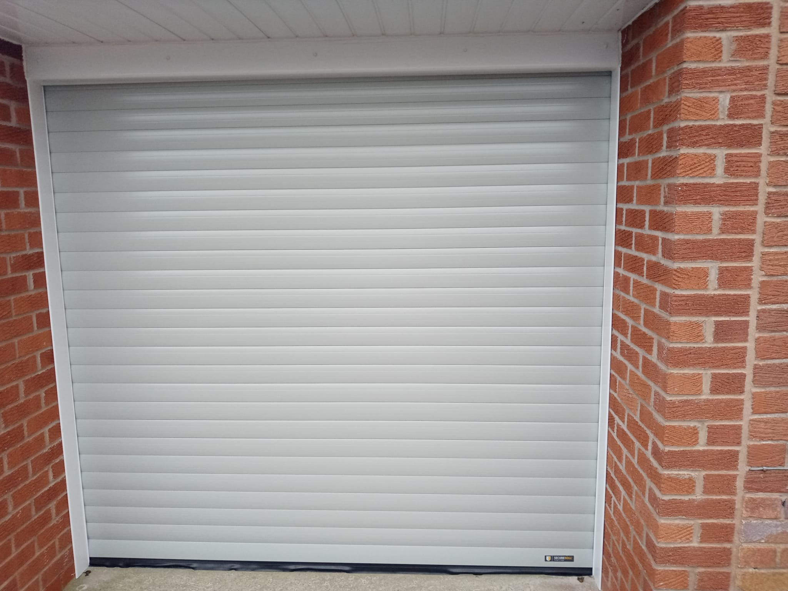
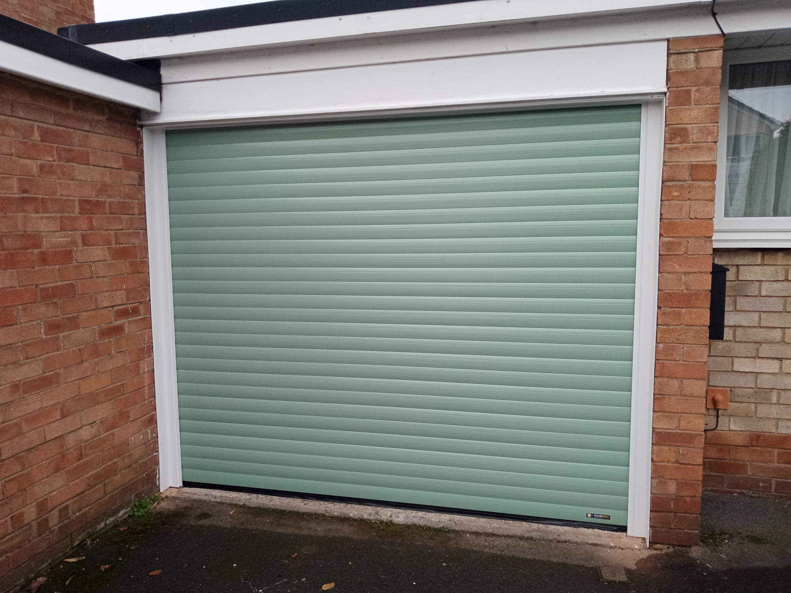
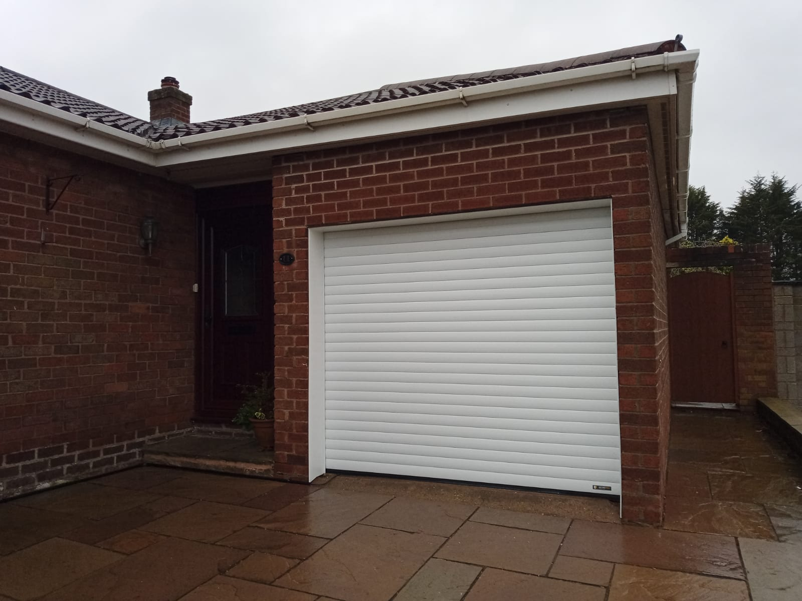
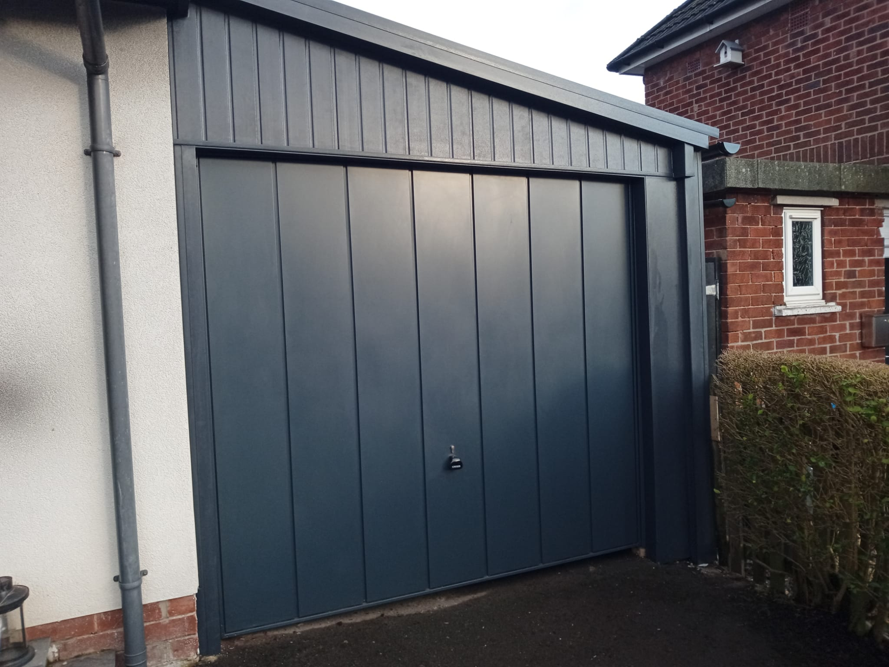
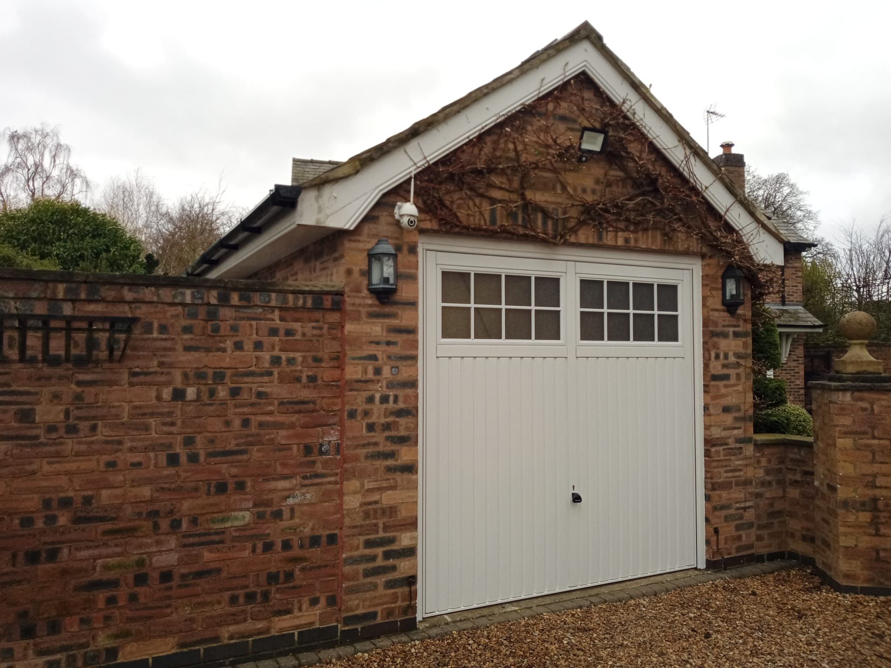
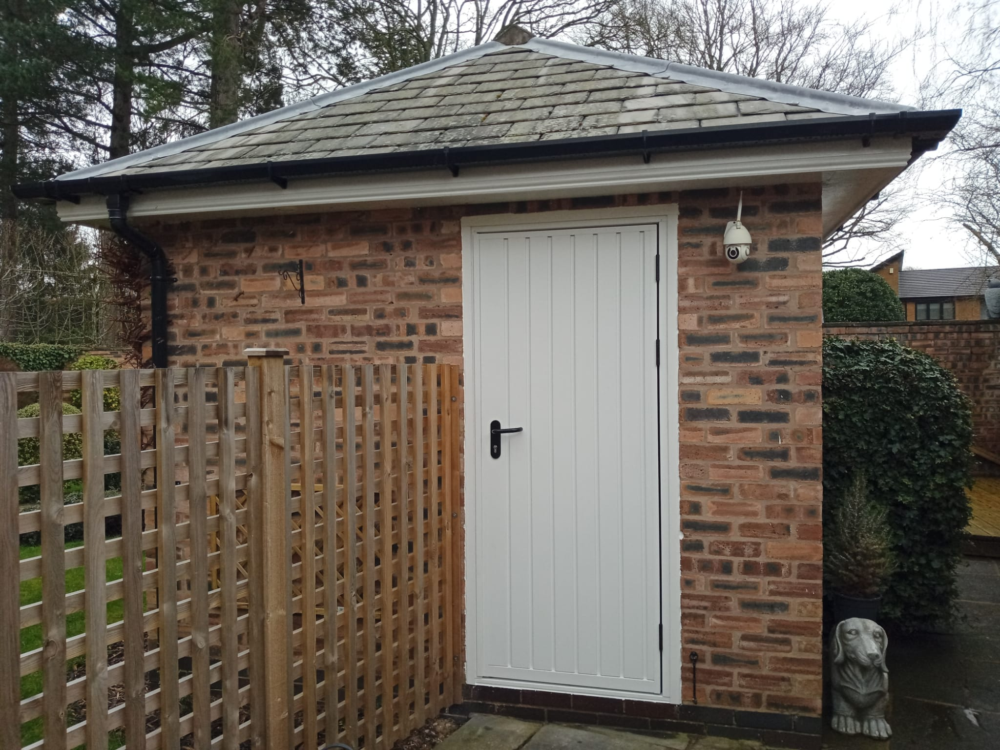

Every garage door installation varies depending on the property, size, and style required.
For an accurate quote, we visit your home to measure up and discuss the best options with you.
We can bring brochures on the day, or you can browse the manufacturer’s website to choose the style, colour, and door type you prefer.

Side Hinged Door in AnthraciteA smart and practical option with easy everyday access, finished in anthracite for a clean, modern look.

Side Hinged Door in WhiteA classic white side hinged garage door offering simple access, low maintenance, and a bright traditional finish.Sectional Door in Pebble GreyA neat and space-saving sectional garage door that provides smooth operation and a crisp, timeless appearance.

Sectional Door in GreenA durable sectional door in a traditional green finish, combining practical performance with classic kerb appeal.

Roller Door in Fir GreenA compact roller garage door in fir green, ideal for maximising space while keeping a tidy and secure frontage.

Roller Door in Agate GreyA sleek agate grey roller door that gives a modern finish and smooth vertical opening for everyday convenience.

Roller Door in Chartwell GreenA stylish chartwell green roller door that adds character to the property while delivering secure and reliable access.

Roller Door in WhiteA clean and versatile white roller garage door designed for a smart finish, smooth use, and efficient space saving.

Up and Over Door in AnthraciteA strong and dependable up and over garage door in anthracite, offering a bold modern look with straightforward operation.

Up and Over Door in WhiteA traditional up and over garage door in white, providing a practical and cost-effective option for many homes.

Personnel Door in WhiteA matching personnel door in white, ideal for secure side access and a neat finish alongside the main garage door.